View Source Code
import numpy as np
import matplotlib.pyplot as plt
from scipy.stats import norm
from scipy.optimize import brentq, fsolve, minimize, root_scalar
Question 1 #
Consider the stochastic system: $$y_k = 0.8y_{k-1} + 0.1y_{k-2} + w_k, \quad w_k \sim \mathcal{N}(0, 1)$$ Given the observation sequence $\{y_k\}$, show how a Kalman filter can be used to estimate the parameters $\theta_1 = 0.8$ and $\theta_2 = 0.1$. You should also simulate the Kalman filter for this case.
2. Simulating the System Data #
Before we can filter, we must generate an observation sequence $\{y_k\}$. We simulate the system defined by the problem statement for $T$ timesteps.
The true system is: $$y_k = \theta_1 y_{k-1} + \theta_2 y_{k-2} + w_k$$ where the true parameters are $\theta_1 = 0.8$ and $\theta_2 = 0.1$, and the process noise is $w_k \sim \mathcal{N}(0, 1)$.
We will generate a sequence $y_0, y_1, \ldots, y_{T-1}$ by iterating this equation. In our simulation code, the observe function will act as this data generator. For this simulation:
- The "true state" is the constant vector $\theta_{\text{true}} = [0.8, 0.1]^T$.
- The dynamic "C matrix" for the simulation is $C_k = [y_{k-1}, y_{k-2}]$.
- The "measurement noise" for the simulation is $v_k = w_k \sim \mathcal{N}(0, 1)$.
- Thus, the simulation computes $y_k = C_k \theta_{\text{true}} + v_k$ at each step, using the previously generated $y$ values.
View Source Code
# --- 1. State dynamics and observation functions ---
def step(A, x, Q, k):
"""
x_{k+1} = A x_k + w_k, w_k ~ N(0, Q)
"""
w = np.random.multivariate_normal(np.zeros(Q.shape[0]), Q)
return A @ x + w
def observe(C, x, R, k):
"""
y_k = C x_k + v_k, v_k ~ N(0, R)
"""
R = np.atleast_2d(R)
if k < 2:
y = np.random.multivariate_normal(np.zeros(R.shape[0]), R)
return y.item() if y.size == 1 else y
else:
v = np.random.multivariate_normal(np.zeros(R.shape[0]), R)
y = (C(k) @ x + v).reshape(-1)
return y.item() if y.size == 1 else y
3. Formulating the Kalman Filter for Parameter Estimation #
To estimate the parameters $\theta_1$ and $\theta_2$, we must re-frame the problem into the standard state-space form required by the Kalman filter.
The standard Kalman filter model is: $$x_k = A x_{k-1} + w_{k-1} \quad (\text{State Equation})$$ $$y_k = C_k x_k + v_k \quad (\text{Observation Equation})$$
We define our filter components as follows:
State Vector ($x_k$) #
The "state" we want to estimate is the vector of the unknown, constant parameters. $$x_k = \theta_k = \begin{bmatrix} \theta_1 \\ \theta_2 \end{bmatrix}$$
State Dynamics #
Since the parameters $\theta_1$ and $\theta_2$ are constants, our model for their dynamics is static: the state at time $k$ is the same as the state at time $k-1$. $$x_k = I \cdot x_{k-1} + \mathbf{0}$$ This gives us:
- State Transition Matrix $A$: $A = I = \begin{bmatrix} 1 & 0 \\ 0 & 1 \end{bmatrix}$. This is coded as
A = np.eye(2). - Process Noise $w_k$: The process noise is zero, $w_k = \mathbf{0}$.
- Process Noise Covariance $Q$: $Q = \begin{bmatrix} 0 & 0 \\ 0 & 0 \end{bmatrix}$. This tells the filter the parameters are constant and do not "drift."
Observation Model ($C_k$, $R$) #
The "observation" $y_k$ is the scalar output from the original system. We must relate this observation to our state vector $x_k$.
The original system is: $$y_k = 0.8y_{k-1} + 0.1y_{k-2} + w_k$$ We can rewrite this in terms of our unknown state $x_k = [\theta_1, \theta_2]^T$: $$y_k = \begin{bmatrix} y_{k-1} & y_{k-2} \end{bmatrix} \begin{bmatrix} \theta_1 \\ \theta_2 \end{bmatrix} + w_k$$ This perfectly matches the filter's observation equation $y_k = C_k x_k + v_k$.
- Observation Matrix $C_k$: $C_k = \begin{bmatrix} y_{k-1} & y_{k-2} \end{bmatrix}$. This is a time-varying matrix because it depends on the previous observations. This is coded as
def C(k): .... - Measurement Noise $v_k$: The filter's measurement noise $v_k$ is simply the original system's noise, $w_k$.
- Measurement Noise Covariance $R$: Since $w_k \sim \mathcal{N}(0, 1)$, the covariance $R$ is the scalar $R = 1$. This is coded as
R = 1.
View Source Code
def KalmanFilter(y_seq, A, C, Q, R, x0, Sigma0):
"""
General-dimensional Kalman filter.
Works for both scalar and vector observations.
"""
n = A.shape[0]
T = len(y_seq)
x_est = np.zeros((T, n))
Sigma_est = np.zeros((T, n, n))
x_pred = x0.copy()
Sigma_pred = Sigma0.copy()
# Ensure Q, R are at least 2D
Q = np.atleast_2d(Q)
R = np.atleast_2d(R)
for k in range(T):
# --- Prediction ---
x_pred = A @ x_pred
Sigma_pred = A @ Sigma_pred @ A.T + Q
# --- Update ---
Ck = np.atleast_2d(C(k)) # ensure row vector
y_pred = (Ck @ x_pred).reshape(-1, 1)
yk = np.atleast_2d(y_seq[k]).reshape(-1, 1)
S = Ck @ Sigma_pred @ Ck.T + R
S = np.atleast_2d(S)
# Kalman gain
K = Sigma_pred @ Ck.T @ np.linalg.inv(S)
# Update estimate
innovation = yk - y_pred
x_filt = x_pred + (K @ innovation).flatten()
Sigma_filt = Sigma_pred - K @ Ck @ Sigma_pred
# Store
x_est[k] = x_filt
Sigma_est[k] = Sigma_filt
# Prepare next
x_pred = x_filt
Sigma_pred = Sigma_filt
return x_est, Sigma_est
View Source Code
A = np.eye(2)
x0 = np.zeros(2)
Q = 0 * np.eye(2)
R = 1
Sigma0 = 100*np.eye(2)
# Simulate data
T = 1000
x_true = np.zeros((T,2))
y_obs = np.zeros((T, 1))
def C(k):
return np.array([[0, 0]]) if k < 2 else np.array([y_obs[k-1].item(), y_obs[k-2].item()])
x = x0.copy()
true_theta = np.array([0.8,0.1])
for k in range(T):
y = observe(C, true_theta, R, k)
x_true[k] = x
y_obs[k] = y
# Run filter
x_est, Sigma_est = KalmanFilter(y_obs, A, C, Q, R, x0, Sigma0)
4. Analysis of Simulation Results #
The plots generated from the simulation clearly demonstrate the Kalman filter's effectiveness in this parameter estimation problem.
Estimate Convergence #
The first plot, "Kalman Filter Parameter Estimation," shows the estimated values $\hat{\theta}_1$ and $\hat{\theta}_2$ as a function of the time step $k$.
- Both estimates begin at their initial (uninformed) guess of $0$.
- As the filter processes more observations ($y_k$), the estimates quickly move toward their respective true values.
- Despite the noisy data, the estimates stabilize very close to the true values ($\theta_1 = 0.8$ and $\theta_2 = 0.1$) after only about 200 time steps.
Variance Reduction #
The second plot, "Parameter Estimate Variance (Log Scale)," shows the filter's internal uncertainty about its estimates (specifically, the diagonal elements of the covariance matrix $\Sigma_k$).
- The plot uses a logarithmic scale for the y-axis.
- The variance starts very high (our initial
Sigma0 = 100), reflecting our initial uncertainty. - The variance then decreases exponentially fast, which appears as a near-straight line on this log-scale plot.
- This rapid, exponential decrease in uncertainty is precisely why the parameter estimates in the first plot can converge and "lock on" to the true values so quickly. The filter becomes highly confident in its estimates after just a few hundred iterations.
View Source Code
# Plotting
# ---------------------------------
# Plot 1: Parameter Estimates
# ---------------------------------
plt.figure(figsize=(10, 6))
plt.plot(x_est[:, 0], label=r'Estimate $\hat{\theta}_1$ (0.8)')
plt.plot(x_est[:, 1], label=r'Estimate $\hat{\theta}_2$ (0.1)')
# Plot true values as horizontal lines
plt.axhline(y=true_theta[0], color='r', linestyle='--', label=r'True $\theta_1 = 0.8$')
plt.axhline(y=true_theta[1], color='b', linestyle='--', label=r'True $\theta_2 = 0.1$')
plt.title('Kalman Filter Parameter Estimation')
plt.xlabel('Time step (k)')
plt.ylabel('Parameter Value')
plt.legend()
plt.grid(True)
# ---------------------------------
# Plot 2: Variance (Uncertainty)
# ---------------------------------
# Extract the diagonal elements (variances) from the covariance matrix
var_theta1 = Sigma_est[:, 0, 0]
var_theta2 = Sigma_est[:, 1, 1]
plt.figure(figsize=(10, 6))
# Plot variance on a log scale for better visibility as it drops quickly
plt.plot(var_theta1, label=r'Variance($\hat{\theta}_1$)')
plt.plot(var_theta2, label=r'Variance($\hat{\theta}_2$)')
plt.yscale('log') # Use log scale
plt.title('Parameter Estimate Variance (Log Scale)')
plt.xlabel('Time step (k)')
plt.ylabel('Variance')
plt.legend()
plt.grid(True)
# Show the plots
plt.show()
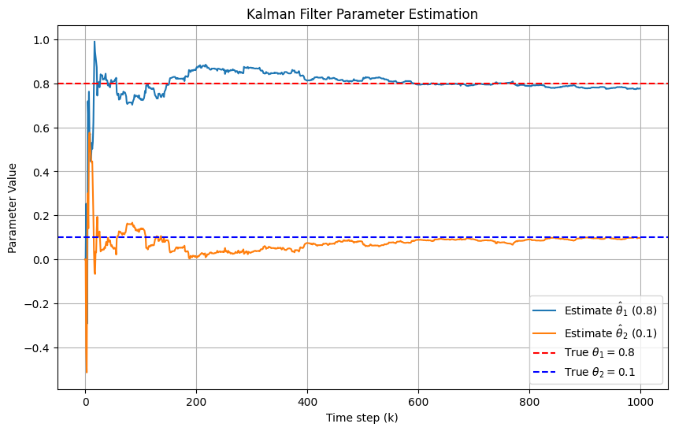
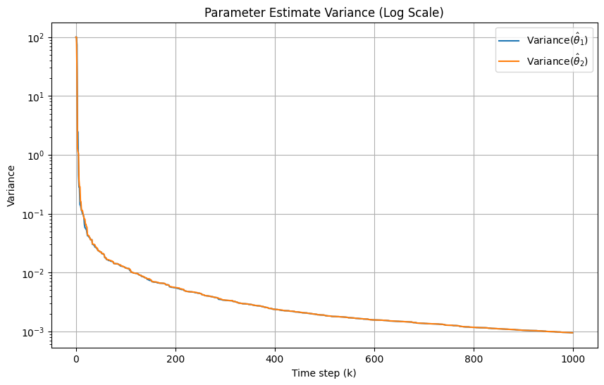
Question 2 #
Illustrate using simulation how the particle filter can be used to estimate the state of the following system:
$$ x_{k+1} = 0.9 x_k + w_k, \qquad y_k = \sin(x_k) + v_k, $$
where $w_k$ and $v_k$ are i.i.d. $\mathcal{N}(0,1)$ processes.
Define Propagation of the System #
First, we define a prop_step function which will simulate one step of our system for $L$ particles.
View Source Code
def prop_step(k, xk, L, A, G, w, C, f, v):
"""
Single-step propagation for 1D state and L particles.
x_{k+1} = A(k) * x_k + G(k) * w_k
y_{k+1} = C(k) * f(x_{k+1}) + v_k
Parameters
----------
k : int
Current step
xk : ndarray
Current states, shape (L,)
L : int
Number of particles
A : callable
Function A(k) returning scalar
G : callable
Function G(k) returning scalar
w : callable
Function w(k,L) returning L-length noise array
C : callable
Function C(k) returning scalar
f : callable
Function f(x), applied elementwise
v : callable
Function v(k,L) returning L-length observation noise array
Returns
-------
x_next : ndarray
Next states, shape (L,)
y_next : ndarray
Next observations, shape (L,)
"""
wk = w(k,L) # shape (L,)
Ak = A(k) # scalar
Gk = G(k) # scalar
# State update
x_next = Ak * xk + Gk * wk # shape (L,)
# Observation update
Ck = C(k) # scalar
vk = v(k,L) # shape (L,)
y_next = Ck * f(x_next) + vk # shape (L,)
return x_next, y_next
View Source Code
# ------------------------------
# Simulation parameters
# ------------------------------
L = 10000
K = 200
# System definitions (includes simple system)
def A(k): return 0.9
def G(k): return 1.0
def w(k,L): return np.random.normal(0, 1, L)
def C(k): return 1.0
def v(k,L): return np.random.normal(0, 1, L)
# Simple vs Nonlinear Observation Functions
def f(x): return np.sin(x)
def f_simple(x): return x
# TRUE SIMPLE PATH WE OBSERVE (y_k = x_k + v_k)
x_true_simple = np.zeros(K+1)
y_simple = np.zeros(K+1)
x_true_simple[0] = np.random.normal(0,1) # Initial random state
for k in range(K):
x_next, y_next = prop_step(k, x_true_simple[k], 1, A, G, w, C, f_simple, v)
x_true_simple[k+1] = x_next.item()
y_simple[k+1] = y_next.item()
# TRUE Q2 PATH THAT WE OBSERVE (y_k = sin(x_k)+v_k)
x_true = np.zeros(K+1)
y = np.zeros(K+1)
x_true[0] = np.random.normal(0,1) # Initial random state
for k in range(K):
x_next, y_next = prop_step(k, x_true[k], 1, A, G, w, C, f, v)
x_true[k+1] = x_next.item()
y[k+1] = y_next.item()
Run a Bootstrap Particle Filter #
Suppose the model is defined by $$ p(x_{k+1} \mid x_k), \qquad p(y_k \mid x_k). $$
Particle propagation: Sample $L$ particles $$ \tilde{x}_k^{(i)} \sim p(x_k \mid x_{k-1}^{(i)}), $$ and augment the particles with a new step. This is done easily in the code as just appending the new observation. $$ \tilde{x}_{0:k}^{(i)} = \left( x_{0:k-1}^{(i)}, \tilde{x}_k^{(i)} \right). $$
Importance weight update: Since this is a bootstrap filter we get that the importance weight update is just multiplying by the likelihood! $$ w_k(\tilde{x}_{0:k}^{(i)}) \propto \frac{p(y_k \mid \tilde{x}_k^{(i)}) \, p(\tilde{x}_k^{(i)} \mid x_{k-1}^{(i)})} {p(\tilde{x}_k^{(i)} \mid x_{k-1}^{(i)})} \, w_{k-1}(x_{0:k-1}^{(i)}) = p(y_k \mid \tilde{x}_k^{(i)}) \, w_{k-1}(x_{0:k-1}^{(i)}). $$
Normalized weight: We want the weights normalized so that we can sample new particles from the weight distribution $$ \tilde{\omega}_k^{(i)} = \frac{w_k(\tilde{x}_{0:k}^{(i)})}{\sum_{j=1}^N w_k(\tilde{x}_{0:k}^{(j)})}. $$
Selection step: We use an Effective Sample Size (ESS) method to determine when to resample. The ESS is defined as $$ \text{ESS}_k = \frac{1}{\sum_{i=1}^N (\tilde{\omega}_k^{(i)})^2}. $$ If $\text{ESS}_k$ falls below a threshold (e.g., $N/2$), we perform resampling:
$$ I^{(i)} \sim \tilde{\omega}_k^{(i)}, \qquad i = 1, \dots, N, $$ and then set $$ x_k^{(i)} = \tilde{x}_k^{(I^{(i)})}, \qquad i = 1, \dots, N. $$
Estimation: Finally, we calculate the MAP estimate as,
$$\hat{x}_k^{MAP} = x_k^{(i^*)} \quad\quad\quad i^{\star} = \operatorname*{argmax}_i w_k^{(i)}$$
Particle Filter Functions #
View Source Code
def particle_filter(y, L, K, A, G, w, C, f, v):
# Initialize particles and weights
x_particles = np.zeros((K+1, L))
wk_particles = np.ones((K+1, L)) / L # initial uniform weights
unnormalized_weights = np.ones((K+1, L)) / L # initial unnormalized weights
resample_times = np.zeros(K+1)
x_MAP = np.zeros(K+1)
# Initial L Particle States
x_particles[0, :] = np.random.normal(0, 1, L)
# Particle filter loop
for k in range(K):
# Propagate particles by one step
x_next, _ = prop_step(k, x_particles[k, :], L, A, G, w, C, f, v)
x_particles[k+1, :] = x_next
# Update weights based on likelihood
likelihood = norm.pdf(y[k+1], loc=f(x_next), scale=1.0)
unnormalized_weights[k+1,:] = unnormalized_weights[k,:]*likelihood
# Check for weight collapse (can happen if likelihoods are tiny)
if np.sum(unnormalized_weights[k+1, :]) == 0.0:
# Re-initialize weights to avoid collapse
wk_particles[k+1, :] = 1.0 / L
else:
wk_particles[k+1, :] = unnormalized_weights[k+1,:] / np.sum(unnormalized_weights[k+1, :]) # normalize
# Compute MAP estimate
max_idx = np.argmax(wk_particles[k+1, :])
x_MAP[k+1] = x_particles[k+1, max_idx]
# Compute Effective Sample Size (ESS)
ESS_k = 1.0 / np.sum(wk_particles[k+1, :]**2)
# Resample if ESS below threshold (e.g., L/2)
if ESS_k < L / 6:
# Resampling using inverse CDF
cdf = np.cumsum(wk_particles[k+1, :])
u = np.random.rand(L)
indices = np.searchsorted(cdf, u)
x_particles[k+1, :] = x_next[indices]
# Reset weights after resampling
wk_particles[k+1, :] = 1.0 / L
unnormalized_weights[k+1, :] = 1.0 / L
resample_times[k] = 1
return x_particles, x_MAP, resample_times
Finally we can create a general plotting function for our particles. Note that in all the graphs, the vertical dotted black lines indicate when we have resampled our bootstrap particle filter.
View Source Code
def plot_particles(x_particles,x_true,x_MAP,resample_times,title="Particle Filter States"):
"""
Plot particle trajectories over time.
Parameters
----------
x_particles : ndarray
Particle states, shape (K+1, L)
title : str
Plot title
"""
K_plus_1, L = x_particles.shape
t = np.arange(K_plus_1)
plt.figure(figsize=(12, 6))
# Plot all particle trajectories (semi-transparent)
#plt.plot(t, x_particles, color='blue', alpha=0.1, linewidth=1)
# Find indices where resampling occurred
resample_indices = np.where(resample_times == 1)[0]
for k in resample_indices:
plt.axvline(x=k, color='black', linestyle='--', alpha=0.1)
# Plot true trajectory
plt.plot(t, x_true, color='black', linewidth=2, label='True trajectory')
# Plot MAP trajectory
plt.plot(t, x_MAP, color='red', linewidth=1, label='Particle Filter MAP trajectory')
plt.xlabel("Time step k")
plt.ylabel("State x_k")
plt.title(title)
plt.legend()
plt.grid(True)
plt.show()
Particle Filter Simulation: #
We run a particle filter on the below simulation of $L$ particles and $K$ times steps.
Note, we first run a particle filter on the simpler, linear model where, $$ y_k = x_k+v_k $$ Here, we see our filter work extremely well, verfiying that we have coded this correctly.
View Source Code
# Run particle filter on simple system
x_particles_simple, x_MAP_simple, resample_times_simple = particle_filter(y_simple, L, K, A, G, w, C, f_simple, v)
# Plot Particles
plot_particles(x_particles_simple, x_true_simple, x_MAP_simple ,resample_times_simple, title="Simple Particle Filter (y_k = x_k+v_k)")
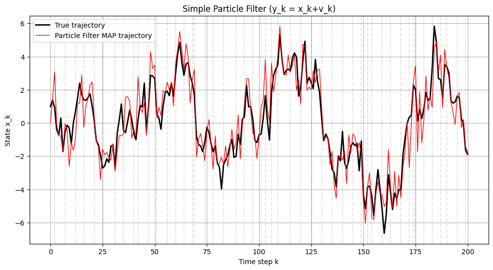
Now we can simulate the true system, $$ x_{k+1} = 0.9 x_k + w_k, \qquad y_k = \sin(x_k) + v_k, $$ Note here that our particle filter is not NEARLY as good as in the linear case. This seems to be mainly due to the oscillatory nature of our observations. For many other nonlinear functions, our particle filter actually performs extremely well.
View Source Code
# Run particle filters
x_particles, x_MAP, resample_times = particle_filter(y, L, K, A, G, w, C, f, v)
# Plot Particles
plot_particles(x_particles, x_true, x_MAP,resample_times, title="Q2 Filtering (y_k = sin(x_k)+v_k)")
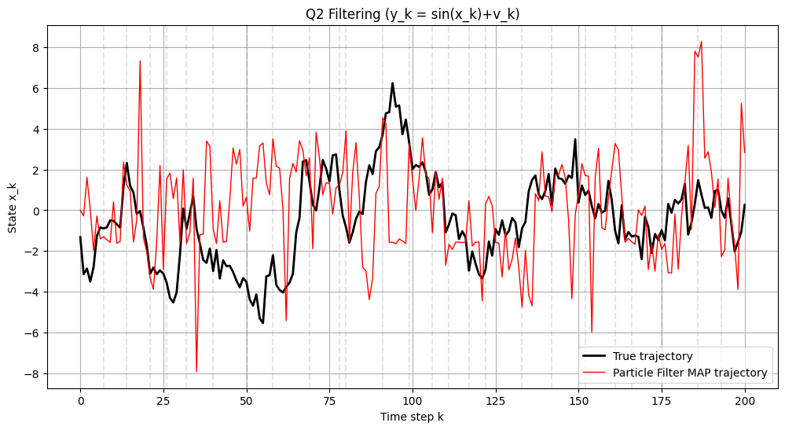
Quantize to an 10 State HMM Filter #
Next, we can take our continuous process and quantize this to 10 individual states that we can then use an HMM filter on.
HMM FILTER from particle filter we see we get states anywhere from -6 to 6 so if we use 10 states just discreteize between -5 and 5
HMM Functions #
View Source Code
def calculate_empirical_matrices(N, A, G, w, C, f, v):
# Method 1: Discretize state space by regions and then simulate x_k,y_k and estimate P and B
K = 20000
xk = np.zeros(K+1)
yk = np.zeros(K+1)
# Initial state
xk[0] = np.random.normal(0, 1)
# Initialize P,B
P = np.zeros((N,N))
B = np.zeros((N,N))
S = np.linspace(-5,5,N) # State Space
# Propogate States in loop and calculate empirical P,B (essentially training loop)
for k in range(K):
# Propagate particles
x_next, y_next = prop_step(k, xk[k], 1, A, G, w, C, f, v)
xk[k+1] = x_next.item()
yk[k+1] = y_next.item()
# See where xk and yk land in:
idxX = np.searchsorted(S, x_next)
idxY = np.searchsorted(S, y_next)
idxk = np.searchsorted(S, xk[k])
# Have to clip just in case it goes outside of 5
idxX = np.clip(idxX, 0, N-1)
idxY = np.clip(idxY, 0, N-1)
idxk = np.clip(idxk, 0, N-1)
# See where they jumped from and add one
P[idxk,idxX] += 1
B[idxX,idxY] += 1
# Normalize P
P_row_sums = P.sum(axis=1, keepdims=True)
P_empirical = np.divide(P, P_row_sums, where=P_row_sums != 0)
# Replace zero rows with uniform distribution
zero_rows = (P_row_sums.flatten() == 0)
P_empirical[zero_rows] = 1.0 / P.shape[1]
# Normalize B
B_row_sums = B.sum(axis=1, keepdims=True)
B_empirical = np.divide(B, B_row_sums, where=B_row_sums != 0)
# Replace zero rows with uniform distribution
zero_rows_B = (B_row_sums.flatten() == 0)
B_empirical[zero_rows_B] = 1.0 / B.shape[1]
return P_empirical, B_empirical
def calculate_pdf_based_matrices(N, A, G, w, C, f, v):
# Method 2: calculate P, B based off emission probabilties calculated using true probability distribution
S = np.linspace(-5,5,N) # State Space
P = np.zeros((N,N))
B = np.zeros((N,N))
for i in range(N):
for j in range(N):
P[i,j] = norm.pdf(S[j],A(k)*S[i],1) # True P(x_k+1 = j \mid x_k = i) ~ N(0.9x_k,1 ; x_k+1)
B[i,j] = norm.pdf(S[j],f(S[i]),1) # True P(y_k = j \mid x_k = i) ~ N(sin(x_k),1 ; y_k)
# Normalize rows to sum to 1
P /= P.sum(axis=1, keepdims=True)
B /= B.sum(axis=1, keepdims=True)
return P,B
def HMM_filter(P,B,y,N,K):
xkHMM = np.zeros(K+1)
pi = np.ones((N,K+1)) / N
S = np.linspace(-5,5,N) # State Space
y_hmm = np.zeros(K+1,dtype=int)
for k in range(K):
# Sort observations into HMM bins
if k==201:
print(k)
idxY = np.searchsorted(S, y[k].item())
idxY = np.clip(idxY, 0, N-1)
y_hmm[k] = int(idxY)
# HMM Filter
alpha = np.diag(B[:,y_hmm[k]]) @ P.T @ pi[:,k]
row_sum = np.ones(N) @ alpha
pi[:,k+1] = alpha / row_sum if row_sum != 0 else np.ones(N)/N
xkHMM[k+1] = S[np.argmax(pi[:,k+1])]
return xkHMM
View Source Code
def plot_Q2(x_particles,x_true,x_MAP,resample_times,xkHMM,xkHMM_empirical,title="Particle Filter States"):
"""
Plot particle trajectories over time.
Parameters
----------
x_particles : ndarray
Particle states, shape (K+1, L)
title : str
Plot title
"""
K_plus_1, L = x_particles.shape
t = np.arange(K_plus_1)
plt.figure(figsize=(12, 6))
# Plot all particle trajectories (semi-transparent)
#plt.plot(t, x_particles, color='blue', alpha=0.1, linewidth=1)
# Find indices where resampling occurred
resample_indices = np.where(resample_times == 1)[0]
for k in resample_indices:
plt.axvline(x=k, color='black', linestyle='--', alpha=0.1)
# Plot true trajectory
plt.plot(t, x_true, color='black', linewidth=2, label='True trajectory')
# Plot MAP trajectory
plt.plot(t, x_MAP, color='red', linewidth=1, label='Particle Filter MAP trajectory')
# Plot HMM trajectory
plt.plot(t, xkHMM, color='blue', linewidth=1, label='HMM P,B Direct Method')
# Plot HMM trajectory
plt.plot(t, xkHMM_empirical, color='cyan', linewidth=1, label='HMM P,B Empirical Method')
plt.xlabel("Time step k")
plt.ylabel("State x_k")
plt.title(title)
plt.legend()
plt.grid(True)
plt.show()
View Source Code
# Parameters
L = 1 # Need only one path here
N = 11 # Discretization number (Number of States)
# Calculate P and B matrices using two different methods
P_E_simple, B_E_simple = calculate_empirical_matrices(N, A, G, w, C, f_simple, v)
P_simple, B_simple = calculate_pdf_based_matrices(N, A, G, w, C, f_simple, v)
# Calculate HMM Filters
xkHMM_empirical_simple = HMM_filter(P_E_simple,B_E_simple,y_simple,N,K)
xkHMM_simple = HMM_filter(P_simple,B_simple,y_simple,N,K)
# Plot
plot_Q2(x_particles_simple, x_true_simple, x_MAP_simple, resample_times_simple,xkHMM_simple,xkHMM_empirical_simple,title="Simple Filtering (y_k = x_k+v_k)")
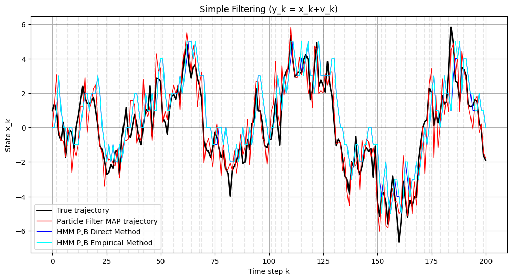
View Source Code
# Parameters
L = 1 # Need only one path here
N = 11 # Discretization number (Number of States)
# Calculate P and B matrices using two different methods
P_E, B_E = calculate_empirical_matrices(N, A, G, w, C, f, v)
P, B = calculate_pdf_based_matrices(N, A, G, w, C, f, v)
xkHMM_empirical = HMM_filter(P_E,B_E,y,N,K)
xkHMM = HMM_filter(P,B,y,N,K)
plot_Q2(x_particles,x_true,x_MAP,resample_times,xkHMM,xkHMM_empirical,title="Q2 Filtering (y_k = sin(x_k)+v_k)")
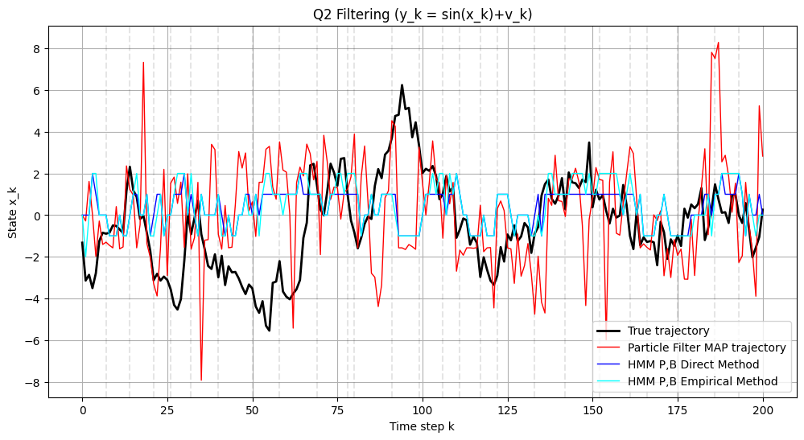
Extended Kalman Filter #
Extended Kalman Filter (EKF).
Model: $$ x_{k+1} = A(k)\, x_k + w_k,\qquad w_k \sim \mathcal{N}(0,Q) $$ $$ y_{k+1} = C(k)\, f(x_{k+1}) + v_{k+1},\qquad v_{k+1} \sim \mathcal{N}(0,R) $$
Here we use two different Jacobian-like objects:
$$
F_k := A(k)\quad\text{(state-transition Jacobian, since the dynamics are linear)}
$$
and
$$
F(x) := f'(x)\quad\text{(derivative of the nonlinear function }f\text{).}
$$
In our code F is the callable that returns (f'(x)).
Initialization: $$ x_{0|0} = x_0,\qquad P_{0|0} = P_0. $$
Prediction step: $$ x_{k+1|k} = A(k)\, x_{k|k} $$ $$ P_{k+1|k} = F_k\, P_{k|k}\, F_k^\top + Q $$
Update step:
Measurement Jacobian (using (F(x)=f'(x))): $$ H_k = C(k)\, f'(x_{k+1|k}) = C(k)\, F(x_{k+1|k}) $$
Predicted measurement: $$ \hat{y}_{k+1} = C(k)\, f(x_{k+1|k}) $$
Innovation: $$ \tilde{y}_{k+1} = y_{k+1} - \hat{y}_{k+1} $$
Innovation covariance: $$ S_k = H_k\, P_{k+1|k}\, H_k^\top + R $$
Kalman gain: $$ K_k = P_{k+1|k}\, H_k^\top S_k^{-1} $$
State update: $$ x_{k+1|k+1} = x_{k+1|k} + K_k\, \tilde{y}_{k+1} $$
Covariance update: $$ P_{k+1|k+1} = (I - K_k H_k)\, P_{k+1|k} $$
View Source Code
def EKF_filter(y, x0, P0, Q, R, A, G, C, f, F):
"""
Extended Kalman Filter using true observations, similar in style to HMM_filter.
Parameters
----------
y : ndarray
Observed measurements, length K+1
x0 : float
Initial state estimate
P0 : float
Initial covariance
Q : float
Process noise covariance
R : float
Measurement noise covariance
A : callable
Not used here (kept for signature compatibility)
G : callable
Function G(k) returning scalar (process noise scaling)
C : callable
Function C(k) returning scalar (observation scaling)
f : callable
Nonlinear state transition function f(x)
F : callable
Derivative of f function
Returns
-------
x_hat : ndarray
Filtered state estimates
P : ndarray
Error covariances
"""
K = len(y) - 1
x_hat = np.zeros(K+1)
P = np.zeros(K+1)
x_hat[0] = x0
P[0] = P0
for k in range(K):
# ----------------------------
# EKF Prediction
# ----------------------------
Fk = A(k) # df/dx evaluated at x_hat[k]; Since we assume x_k+1 = A(k) x_k this is always A(k)
x_pred = A(k)*x_hat[k]
P_pred = Fk * P[k] * Fk + Q
# ----------------------------
# EKF Update using true observation
# ----------------------------
Hk = C(k) * F(x_pred) # d/dx C_k * f(x_k) evaluated at x_pred so = C(k)*f'(x_pred) so here we get a cosine
y_pred = y[k+1]-C(k) * f(x_pred)
S = Hk * P_pred * Hk + R
Kk = P_pred * Hk / S
x_hat[k+1] = x_pred + Kk * y_pred
P[k+1] = (1 - Kk * Hk) * P_pred
return x_hat, P
View Source Code
def plot_Q2_EKF(x_particles,x_true,y,x_MAP,resample_times,xkHMM,xkHMM_empirical,xEKF,title="Particle Filter States"):
"""
Plot particle trajectories over time.
Parameters
----------
x_particles : ndarray
Particle states, shape (K+1, L)
title : str
Plot title
"""
K_plus_1, L = x_particles.shape
t = np.arange(K_plus_1)
plt.figure(figsize=(12, 6))
# Find indices where resampling occurred
resample_indices = np.where(resample_times == 1)[0]
for k in resample_indices:
plt.axvline(x=k, color='black', linestyle='--', alpha=0.1)
# Plot true trajectory
plt.plot(t, x_true, color='black', linewidth=3, label='True trajectory')
# Plot Observations
plt.plot(t, y, color='yellow', linewidth=3, linestyle = '-', label='Observations')
# Plot MAP trajectory
plt.plot(t, x_MAP, color='red', linewidth=1, label='Particle Filter MAP trajectory')
# Plot HMM trajectory
plt.plot(t, xkHMM, color='blue', linewidth=1, label='HMM P,B Direct Method')
# Plot HMM trajectory
plt.plot(t, xkHMM_empirical, color='cyan', linewidth=1, label='HMM P,B Empirical Method')
# Plot HMM trajectory
plt.plot(t, xEKF, color='purple', linewidth=1.5, label='Extended Kalman Filter')
plt.xlabel("Time step k")
plt.ylabel("State x_k")
plt.title(title)
plt.legend()
plt.grid(True)
plt.show()
View Source Code
# Run EKF using the observations
x0 = 0.0
P0 = 1.0
Q = 1.0
R = 1.0
def F_simple(x): return 1
# Calculate EKF
xEKF_simple, P_est_simple = EKF_filter(y_simple, x0, P0, Q, R, A, G, C, f_simple, F_simple)
# Plot
plot_Q2_EKF(x_particles_simple, x_true_simple, y_simple, x_MAP_simple, resample_times_simple,xkHMM_simple,xkHMM_empirical_simple, xEKF_simple, title="Simple Filtering (y_k = x_k+v_k)")
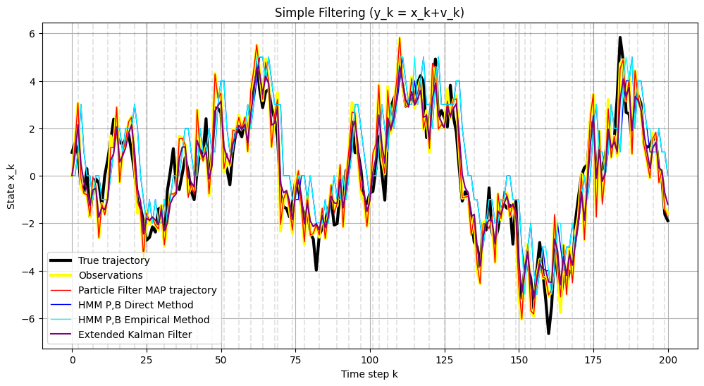
Below is our final graph of question 2. The main thing we want to point out is that overall, none of these filtering methods worked well on this nonlinear system. After testing many functions, we have determined the issue is with the use of an oscillatory $\sin$ function. As you can see, our filters track well with our observations in yellow. However, since $\sin$ is so oscillatory, along with the fact its on a scale similar to the noise, our observations often are nowhere near the true values.
Thus, for most other linear or nonlinear systems tested, these implementations worked extremely well. Here, for sin, they do not. We believe this to be because of the oscillatory nature of sin and the fact the observations are often far apart from the true underlying state.
View Source Code
# Run EKF using the observations
x0 = 0.0
P0 = 1.0
Q = 1.0
R = 1.0
def F(x): return np.cos(x)
# Calculate EKF
xEKF, P_est = EKF_filter(y, x0, P0, Q, R, A, G, C, f, F)
# Plot
plot_Q2_EKF(x_particles, x_true, y, x_MAP, resample_times,xkHMM, xkHMM_empirical, xEKF, title="Q2 Filtering (y_k = sin(x_k)+v_k)")
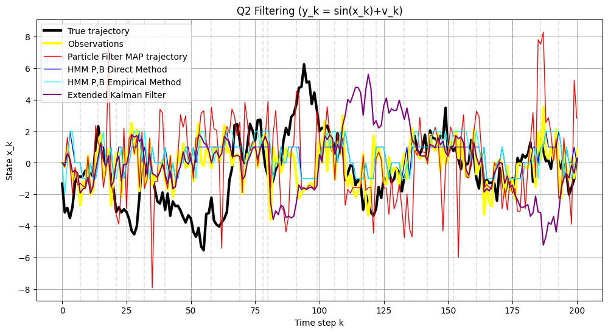
Question 3 #
Simulate a 3-state HMM in Gaussian noise. Derive the EM algorithm for the state levels, noise variance and transition probability. Simulate the EM algorithm. You should compute and plot the log likelihood at each iteration and check that it is increasing. Compare the performance with a general purpose optimization solver where you feed into it the likelihood.
EM Functions #
First, we define 'step_gaussian_hmm' which takes a transition matrix for the true probabilties P[i,j] = P(X_{k+1}=j | X_k=i) along with gaussian means for each states distribution.
View Source Code
def step_gaussian_hmm(P, q, sigma, xk):
"""
Single-step HMM propagation for a GAUSSIAN HMM.
Parameters
----------
P : ndarray, shape (N, N)
Transition matrix: P[i,j] = P(X_{k+1}=j | X_k=i)
q : ndarray, shape (N,)
Array of Gaussian means for each state
sigma : float
Shared Gaussian standard deviation
xk : int
Current state (index 0..N-1)
Returns
-------
x_next : int
Next state
y_next : float
Sampled continuous observation
"""
# Sample next state from transition probabilities
x_next = np.random.choice(P.shape[0], p=P[xk, :])
# Sample a continuous observation from the Gaussian corresponding to the new state.
y_next = norm.rvs(loc=q[x_next], scale=sigma)
return x_next, y_next
Next, we define a function that calculates an HMM smoother given observations and current estimates of P,q, and sigma squared. This returns our gamma smoothers which are then used in the EM algorithm. The direct formulas are shown below: $$ \alpha^{\theta}_{k+1}(j) = P(x_{k+1} = q_j,\, Y_{1:k+1}\mid \theta) = \sum_{i=1}^{X} \alpha^{\theta}_{k}(i)\, P_{ij}\, b_j(y_{k+1}). $$
$$ \beta^{\theta}_{k}(i) = P(Y_{k+1:N} \mid x_k = q_i,\, \theta) = \sum_{j=1}^{X} \beta^{\theta}_{k+1}(j)\, P_{ij}\, b_j(y_{k+1}). $$
$$ \gamma^{\theta}_{k}(i) = P(x_k = q_i \mid Y_{1:N},\, \theta) = \frac{\alpha^{\theta}_k(i)\, \beta^{\theta}_k(i)} {\sum_{i=1}^{X} \alpha^{\theta}_k(i)\, \beta^{\theta}_k(i)}. $$
$$ \gamma^{\theta}_{k}(i,j) = P(x_k = q_i,\, x_{k+1} = q_j \mid Y_{1:N},\, \theta) = \frac{ \alpha^{\theta}_k(i)\, P_{ij}\, b_j(y_{k+1})\, \beta^{\theta}_{k+1}(j) }{ \sum_{i=1}^{X}\sum_{j=1}^{X} \alpha^{\theta}_k(i)\, P_{ij}\, b_j(y_{k+1})\, \beta^{\theta}_{k+1}(j) }. $$
View Source Code
def forward_backward_smoother(ykh, P, q, sigma_sq, pi_0):
"""
Run the scaled Forward–Backward algorithm for a Gaussian-emission HMM.
Returns:
alpha: (N, K+1)
beta: (N, K+1)
gamma_i: (N, K+1) -- smoothed marginals P(x_k = i | y_0:K)
gamma: (N, N, K) -- smoothed transitions P(x_k=i, x_{k+1}=j | y_0:K)
log_likelihood: float
"""
N = len(q)
K = len(ykh) - 1
# Initialize Smoother Info
alpha = np.zeros((N, K+1))
beta = np.zeros((N, K+1))
gamma_i = np.zeros((N, K+1))
gamma = np.zeros((N, N, K))
b_k = np.zeros((N, K+1)) # P(y_k \mid x_k = j)
# Compute emission probabilities using current sigma_sq and current q
if sigma_sq <= 0: sigma_sq = 1e-8
for j in range(N):
b_k[j] = norm.pdf(ykh, loc=q[j], scale=np.sqrt(sigma_sq))
b_k[b_k == 0] = 1e-100 # Avoid division by zero
# Create an array to STORE scaling factors (i.e. likelihood)
c = np.zeros(K+1)
# Initialize alpha at k=0
alpha[:, 0] = pi_0 * b_k[:, 0]
c[0] = np.sum(alpha[:, 0])
if c[0] > 0:
alpha[:, 0] /= c[0]
for k in range(K):
# Calculate unscaled alpha
unscaled_alpha = (P.T @ alpha[:, k]) * b_k[:, k+1]
c[k+1] = np.sum(unscaled_alpha)
if c[k+1] > 0:
alpha[:, k+1] = unscaled_alpha / c[k+1]
log_likelihood = np.sum(np.log(c))
# Backward pass
beta[:, K] = 1.0 # Initialize beta at k=K
for k in range(K-1,-1,-1):
# Calculate unscaled beta
unscaled_beta = P @ (beta[:,k+1] * b_k[:, k+1])
beta[:, k] = unscaled_beta / c[k+1]
# Smoothing
gamma_i = alpha * beta
for k in range(K):
for i in range(N):
for j in range(N):
gamma[i, j, k] = alpha[i, k] * P[i, j] * b_k[j, k+1] * beta[j, k+1]
# normalize
s = np.sum(gamma[:, :, k])
if s > 0:
gamma[:, :, k] /= s
return alpha, beta, gamma_i, gamma, log_likelihood
#############################################################################
def plot_em_convergence(P_est, q_est, sigma_sq_est, P_true, q_true, sigma_sq_true):
"""
P_est: shape (N, N, E)
q_est: shape (N,E)
sigma_sq: shape (E,)
"""
N, _, E = P_est.shape
iters = np.arange(E)
fig, axes = plt.subplots(2, 2, figsize=(14,10))
axes = axes.ravel()
# -------- Plot P entries --------
colors = [
'tab:blue',
'tab:orange',
'tab:green',
'tab:red',
'tab:brown',
'tab:cyan',
'tab:pink',
'tab:gray',
'tab:purple']
idx = 0
for i in range(N):
for j in range(N):
axes[0].plot(iters, P_est[i, j, :], label=f"P[{i},{j}]", color=colors[idx])
axes[0].axhline(P_true[i, j], linestyle='--', color=colors[idx])
idx += 1
axes[0].set_title("Transition Matrix Entries P[i,j]")
axes[0].set_xlabel("Iteration")
axes[0].set_ylabel("Value")
axes[0].legend()
axes[0].grid(True)
# -------- Plot q --------
idx=0
q_est = np.sort(q_est,axis = 0)
for i in range(N):
axes[1].plot(iters, q_est[i,:], color=colors[idx], label=f"q[{i}]")
axes[1].axhline(q_true[i], linestyle="--", color=colors[idx])
idx += 1
axes[1].set_title("q Convergence")
axes[1].set_xlabel("Iteration")
axes[1].set_ylabel("q values")
axes[1].legend()
axes[1].grid(True)
# -------- Plot sigma_sq --------
axes[2].plot(iters, sigma_sq_est, color="tab:brown", label="sigma_sq estimate")
axes[2].axhline(sigma_sq_true, linestyle="--", color="tab:brown")
axes[2].set_title("sigma_sq Convergence")
axes[2].set_xlabel("Iteration")
axes[2].set_ylabel("sigma_sq value")
axes[2].legend()
axes[2].grid(True)
# -------- Hide the last empty subplot --------
axes[3].axis("off")
plt.tight_layout()
plt.show()
EM Formulation #
Then, we can use this smoother in the EM algorithm to calculate better estimates of q, P, and sigma squared. The auxiliary function, $Q(\theta \mid \theta^{(I)})$, is defined as, $$ Q(\theta \mid \theta^{(I)}) = -\frac{N}{2}\ln \sigma_v^{2} \;-\; \frac{1}{2\sigma_v^{2}} \sum_{t=1}^{N}\sum_{i=1}^{X} (y_t - q_i)^2\, \gamma^{\theta^{(I)}}_{t}(i) \;+\; \sum_{t=1}^{N}\sum_{i=1}^{X}\sum_{j=1}^{X} \gamma^{\theta^{(I)}}_{t}(i,j)\, \log P_{ij}. $$
where
$$ \gamma^{\theta^{(I)}}_{t}(i) = p(x_t = q_i \mid Y_{1:N} ; \theta^{(I)}), \qquad \gamma^{\theta^{(I)}}_{t}(i,j) = p(x_t = q_i, x_{t+1} = q_j \mid Y_{1:N} ; \theta^{(I)}), $$
are computed using the HMM forward–backward smoother.
Thus, we can calculate our M-Step by taking derivatives of our Q function and setting them equal to zero.
$$ \text{M Step:}\quad \frac{\partial Q(\theta \mid \theta^{(I)})}{\partial \theta} = 0 \;\;\Rightarrow\;\; \theta^{(I+1)} = \big(P^{(I+1)},\, q^{(I+1)},\, \sigma_v^{2\,(I+1)}\big). $$
This gives us the updates, $$ P^{(I+1)}_{ij} = \frac{\displaystyle \sum_{t=1}^{N-1} \gamma^{\theta^{(I)}}_{t}(i,j)} {\displaystyle \sum_{t=1}^{N-1} \gamma^{\theta^{(I)}}_{t}(i)} = \frac{ \mathbb{E}\{\#\text{ jumps from } i \text{ to } j \mid Y_{1:N}, \theta^{(I)}\} } { \mathbb{E}\{\#\text{ visits to } i \mid Y_{1:N}, \theta^{(I)}\} }. $$
$$ q^{(I+1)}_{i} = \frac{\displaystyle \sum_{t=1}^{N} \gamma^{\theta^{(I)}}_{t}(i)\, y_t} {\displaystyle \sum_{t=1}^{N} \gamma^{\theta^{(I)}}_{t}(i)}. $$
$$ \sigma_{v}^{2\,(I+1)} = \frac{1}{N} \sum_{t=1}^{N}\sum_{i=1}^{X} \gamma^{\theta^{(I)}}_{t}(i)\, \big( y_t - q^{(I+1)}_{i} \big)^2. $$
View Source Code
def run_em_hmm(ykh, N, E=30):
"""
Run EM (Baum Welch) on an HMM with Gaussian emissions.
Inputs:
ykh : observations (length K+1)
N : number of hidden states
E : number of EM iterations
Returns:
P_est: (N,N,E)
q_est: (N,E) -- means
sigma_sq_est: (E,) -- variances
log_likelihood: (E-1,)
"""
K = len(ykh) - 1
# Storage
P_est = np.zeros((N, N, E))
q_est = np.zeros((N, E))
sigma_sq_est = np.zeros(E)
# --- Initialization ---
P_est[:, :, 0] = np.ones((N, N)) / N
idx = np.linspace(0, K, N, dtype=int) # Grabs three data points across K steps
q_est[:, 0] = ykh[idx]
sigma_sq_est[0] = np.var(ykh) # Guess based off variance of observations
# # TRY BAD INITIAL GUESSES
# q_est[:,0] = np.array([0,0,0])
# sigma_sq_est[0] = 1
pi_0 = np.ones(N) / N
log_likelihood = np.zeros(E)
# --- EM Loop ---
for it in range(E - 1):
# ---- E STEP (Smoothing) ----
alpha, beta, gamma_i, gamma, ll = forward_backward_smoother(
ykh,
P_est[:, :, it],
q_est[:, it],
sigma_sq_est[it],
pi_0,
)
log_likelihood[it] = ll
# ---- M STEP ----
# Update P
for i in range(N):
for j in range(N):
P_est[i,j,it+1] = np.sum(gamma[i,j,:]) / np.sum(gamma_i[i,:-1])
# Update q
for i in range(N):
q_est[i,it+1] = (gamma_i[i,:] @ ykh) / np.sum(gamma_i[i,:])
# Update sigma^2
ss = 0.0
for k in range(K+1):
for i in range(N):
ss += gamma_i[i, k] * (ykh[k] - q_est[i, it+1])**2
# sigma squared Estimate
sigma_sq_est[it+1] = 0
for k in range(K+1):
for i in range(N):
sigma_sq_est[it+1] += gamma_i[i,k]*(ykh[k]-q_est[i,it+1])**2
den = np.sum(gamma_i)
sigma_sq_est /= den
return P_est, q_est, sigma_sq_est, log_likelihood
Now that our functions are ready, we can initialize a simple 3 state Hidden Markov Model with parameters, $$ P_{\text{true}} = \begin{pmatrix} 0.8 & 0.1 & 0.1 \\ 0.1 & 0.8 & 0.1 \\ 0.1 & 0.1 & 0.8 \end{pmatrix}, $$
state–dependent means
$$ q_{\text{true}} = \begin{pmatrix} -5.0 \\[4pt] 0.0 \\[4pt] 5.0 \end{pmatrix}, $$
and Gaussian emission noise with variance
$$ \sigma_{\text{true}}^{2} = 1.0. $$
Thus, conditional on (x_k = i), the observation satisfies $$ y_k \sim \mathcal{N}(q_{\text{true},\, i},\, \sigma_{\text{true}}^{2}). $$
View Source Code
# Intialize Parameters
N=3
E=40
K=5000
P_true = np.array([[0.8, 0.1, 0.1],
[0.1, 0.8, 0.1],
[0.1, 0.1, 0.8]])
q_true = np.array([-5.0, 0.0, 5.0])
sigma_true = 1.0
xkh = np.zeros(K+1, dtype=int)
ykh = np.zeros(K+1, dtype=float)
# Initial state
xkh[0] = 0
ykh[0] = norm.rvs(loc=q_true[xkh[0]], scale=sigma_true)
# Propogate Sample Path
for k in range(K):
# Propagate particles
x_next, y_next = step_gaussian_hmm(P_true, q_true, sigma_true, xkh[k])
xkh[k+1] = x_next
ykh[k+1] = y_next
pi_0 = np.ones(N)/N
P_est, q_est, sigma_squared_est, log_likelihood = run_em_hmm(ykh, N, E)
Our results are printed below.
View Source Code
# --- Results ---
final_P = P_est[:, :, E - 1]
final_q = q_est[:, E - 1]
final_sigma = np.sqrt(sigma_squared_est[E - 1])
# Sort results for comparison (since state labels can be permuted)
sort_indices = np.argsort(final_q)
final_q_sorted = final_q[sort_indices]
final_P_sorted = final_P[sort_indices, :][:, sort_indices]
np.set_printoptions(precision=4, suppress=True)
print("--- True Parameters ---")
print("P_true:\n", P_true)
print("q_true:\n", q_true)
print("sigma_true:\n", sigma_true)
print("\n--- Estimated Parameters (Sorted) ---")
print("P_est:\n", final_P_sorted)
print("q_est:\n", final_q_sorted)
print("sigma_est:\n", final_sigma)
plot_em_convergence(P_est, q_est, sigma_squared_est, P_true, q_true, sigma_true)
--- True Parameters ---
P_true:
[[0.8 0.1 0.1]
[0.1 0.8 0.1]
[0.1 0.1 0.8]]
q_true:
[-5. 0. 5.]
sigma_true:
1.0
--- Estimated Parameters (Sorted) ---
P_est:
[[0.7827 0.1083 0.109 ]
[0.097 0.8039 0.0991]
[0.0997 0.1018 0.7985]]
q_est:
[-5.0102 0.0313 5.0117]
sigma_est:
1.0057324147115594
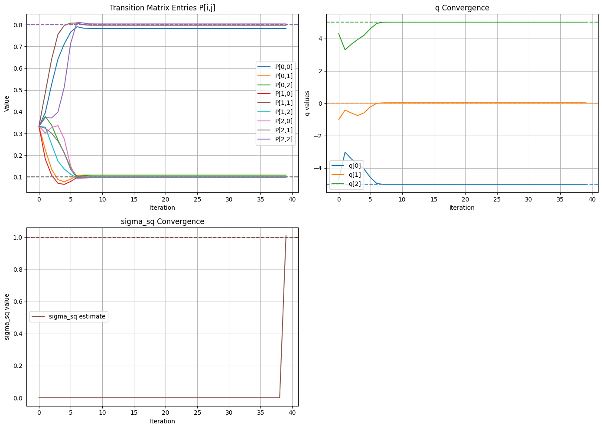
We can also plot the Log-Likelihood of the EM algorithm and notice that we are only ever increasing our likelihood.
View Source Code
t = np.arange(E-1)
plt.figure(figsize=(12, 6))
plt.plot(t, log_likelihood[:E-1], color='black', linewidth=2, label='Log-Likelihood')
plt.xlabel("EM Iteration")
plt.ylabel("Log Likelihood")
plt.title("Log-Likelihood of parameters across EM Algorithm")
plt.legend()
plt.grid(True)
plt.show()
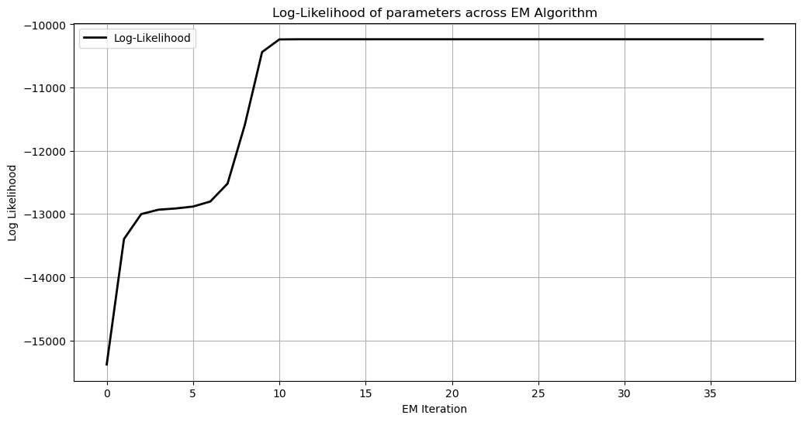
Finally, we are asked to use an actual optimizer to see whether our answer aligns. Here, we first define a log-likelihood function in the format that our scipy optimizer will need.
View Source Code
def log_likelihood_HMM(x,*args):
N = int(args[0][0])
K = int(args[0][1])
ykh = args[0][2:]
q = x[0:N]
sigma_sq = x[N]
P_flat = x[N+1:]
P = P_flat.reshape((N,N))
alpha = np.zeros((N,K+1))
b_k = np.zeros((N, K+1)) # P(y_k \mid x_k = j)
# Assume uniform initial state probability
pi_0 = np.ones(N) / N
# Estimate Current Emission Probs
if sigma_sq <= 0: sigma_sq = 1e-8
for j in range(N):
b_k[j, :] = norm.pdf(ykh, loc=q[j], scale=np.sqrt(sigma_sq))
b_k[b_k == 0] = 1e-100 # Avoid division by zero
# Create an array to STORE scaling factors
c_scalers = np.zeros(K + 1)
# Forward Loop (E-STEP)
alpha[:, 0] = pi_0 * b_k[:, 0]
c_0 = np.sum(alpha[:, 0])
if c_0 > 0:
alpha[:, 0] /= c_0
c_scalers[0] = c_0 # <-- STORE the scaler
for k in range(K):
# Calculate unscaled alpha
unscaled_alpha = (P[:,:].T @ alpha[:,k]) * b_k[:, k+1]
# Calculate and STORE the scaler
c_k = np.sum(unscaled_alpha)
c_scalers[k+1] = c_k # <-- STORE the scaler
if c_k > 0:
alpha[:, k+1] = unscaled_alpha / c_k
log_likelihood = np.sum(np.log(c_scalers))
return -1*log_likelihood
Then, we need to squash our parameters down into a vector. We stack it as (q,sigma squared, P).
View Source Code
# Initialize Parameters
initial_q = np.zeros(N)
initial_sigma_sq = 1
initial_P = np.ones((N, N)) / N
initial_P_flat = initial_P.flatten()
initial_x = np.hstack([initial_q,initial_sigma_sq,initial_P_flat])
argz = np.hstack([N,K,ykh])
x_true = np.hstack([q_true,sigma_true,P_true.flatten()])
Finally, we use scipy to optimize. Bounds are imposed to ensure $\sigma^2 > 0$ and $0 \le P_{ij} \le 1$, while equality constraints enforce that each row of $P$ sums to 1. The scipy.optimize.minimize function with the SLSQP method is used to maximize the log-likelihood, and the resulting parameters are unpacked, sorted by state means to resolve label ambiguity, and compared against the true parameters.
Additionally, we print the EM log likelihood along side this log likelihood to show that often times our EM algorithm does a better job at finding the maximum.
View Source Code
# --- Define Constraints and Bounds ---
N = 3
# 1. Define Bounds
bounds = []
# Bounds for q parameters (N of them): Unconstrained (None, None)
for _ in range(N):
bounds.append((None, None))
# Bounds for sigma_sq (1 of them): > 0
bounds.append((1e-8, None))
# Bounds for P matrix elements (N*N of them): Between 0 and 1
for _ in range(N * N):
bounds.append((0.0, 1.0))
# 2. Define Equality Constraints for P rows summing to 1
constraints = []
# We need N constraints, one for each row of P
for i in range(N):
# This creates a function that the optimizer calls.
# It must return 0 when the constraint is satisfied (sum == 1)
def row_sum_constraint(x, row_index=i, num_states=N):
# Extract the P matrix section from the flattened x vector
P_flat = x[num_states + 1:]
P = P_flat.reshape((num_states, num_states))
# The constraint value: returns sum(row) - 1.0. Must equal zero.
return np.sum(P[row_index, :]) - 1.0
constraints.append({'type': 'eq', 'fun': row_sum_constraint})
# Perform the minimization using the SLSQP method with bounds and constraints
result = minimize(
fun=log_likelihood_HMM,
x0=initial_x,
args=argz,
method='SLSQP', # <-- Changed method to support constraints
bounds=bounds, # <-- Added bounds
constraints=constraints # <-- Added constraints
)
# Unpack and Format Results
# 1. Unpack estimated parameters from the optimized vector (result.x)
x_est = result.x
q_est = x_est[0:N]
sigma_sq_est = x_est[N]
P_est_flat = x_est[N+1:]
P_est = P_est_flat.reshape((N, N))
sigma_est = np.sqrt(sigma_sq_est)
# 2. Sort results for comparison (since state labels can be permuted)
sort_indices = np.argsort(q_est)
final_q_sorted = q_est[sort_indices]
final_P_sorted = P_est[sort_indices, :][:, sort_indices]
# 3. Print Results in the requested format
np.set_printoptions(precision=4, suppress=True)
# Note: P_true, q_true, and sigma_true must be defined in your script previously
print("--- True Parameters ---")
print("P_true:\n", P_true)
print("q_true:\n", q_true)
print("sigma_true:\n", sigma_true)
print("\n--- Estimated Parameters (Sorted) ---")
print("P_est:\n", final_P_sorted)
print("q_est:\n", final_q_sorted)
print("sigma_est:\n", sigma_est)
print(f"\nMaximum Log-Likelihood Value from Scipy Optimizer: {-1*result.fun:.4f}")
print(f"\nMaximum Log-Likelihood Value from EM: {log_likelihood[E-2]}")
--- True Parameters ---
P_true:
[[0.8 0.1 0.1]
[0.1 0.8 0.1]
[0.1 0.1 0.8]]
q_true:
[-5. 0. 5.]
sigma_true:
1.0
--- Estimated Parameters (Sorted) ---
P_est:
[[0.7868 0.0942 0.1189]
[0.0924 0.8055 0.102 ]
[0.1264 0.1067 0.7668]]
q_est:
[-5.0611 0.0028 5.018 ]
sigma_est:
1.0018970830978382
Maximum Log-Likelihood Value from Scipy Optimizer: -10248.7050
Maximum Log-Likelihood Value from EM: -10236.603409415206
Question 4 #
Consider the model $$y_k = A \sin(0.01k + \phi) + x_k + w_k$$ Suppose $x_k$ is a 2 state Markov chain with state levels 1 and 2. Assume $w_k \sim \mathcal{N}(0, 1)$. You only observe $y_1$, $y_2$, . . .. Derive the EM algorithm to estimate amplitude A, phase $\phi$ and the transition matrix of the Markov chain. You should compute and plot the log likelihood at each iteration and check that it is increasing.
E-Step #
First we can define our model in terms of the noise's distribution. $$\begin{aligned} y_k &= A \sin(0.01k + \phi) + x_k + w_k \\ P(x_k \mid x_{k-1}) &= P \text{ matrix} \\ P(y_k \mid x_k) &= P_W(y_k - x_k - A \sin(0.01k + \phi)) \sim \mathcal{N}(x_k + A \sin(0.01k + \phi), 1) \end{aligned}$$
Then, we need to compute the Log-Likelihood function. $$\begin{aligned} \ln p(Y_N, x_N \mid \theta) &= \ln \prod_{k=1}^N P(y_k \mid x_k) P(x_k \mid x_{k-1}) \\ &= \sum_{k=1}^N \ln p(y_k \mid x_k) + \sum_{k=1}^N \ln P(x_k \mid x_{k-1}) \\ &= \sum_{i=1}^2 \sum_{k=1}^N \mathbb{I}(x_k = i) \ln P(y_k \mid x_k = i) + \sum_{j=1}^2 \sum_{i=1}^2 \sum_{k=1}^N \mathbb{I}(x_k = i, x_{k+1} = j) \ln P(x_{k+1} = j \mid x_k = i) \\ &= \sum_{i=1}^2 \sum_{k=1}^N \mathbb{I}(x_k = i) \left( \ln \left( \frac{1}{\sqrt{2\pi}} \right) - \frac{(y_k - i - A \sin(0.01k + \phi))^2}{2} \right) \\ &\quad + \sum_{j=1}^2 \sum_{i=1}^2 \sum_{k=1}^N \mathbb{I}(x_k = i, x_{k+1} = j) \ln P_{ij} \end{aligned}$$
Next, we should calculate the Q-function using conditional expectations. $$\begin{aligned} Q(\theta \mid \theta^{(I)}) &= E \left[ \ln p(Y_N, x_N \mid \theta) \mid Y_N, \theta^{(I)} \right] \qquad \theta = [P_{ij}, A, \phi] \\ &= \sum_{i=1}^2 \sum_{k=1}^N E \left[ \mathbb{I}(x_k = i) \left( \ln \left( \frac{1}{\sqrt{2\pi}} \right) - \frac{(y_k - i - A \sin(0.01k + \phi))^2}{2} \right) \Bigg\vert Y_N, \theta^{(I)} \right] \\ &\quad + \sum_{j=1}^2 \sum_{i=1}^2 \sum_{k=1}^N E \left[ \mathbb{I}(x_k = i, x_{k+1} = j) \ln P_{ij} \mid Y_N, \theta^{(I)} \right] \end{aligned}$$
Note, we can write this in terms of a smoother $\gamma$: $$\begin{aligned} E[\mathbb{I}(x_k = i) \mid Y_N, \theta^{(I)}] &= P(x_k = i \mid Y_N, \theta^{(I)}) = \gamma_k^{\theta^{(I)}}(i) \\ E[\mathbb{I}(x_k = i, x_{k+1} = j) \mid Y_N, \theta^{(I)}] &= P(x_k = i, x_{k+1} = j \mid Y_N, \theta^{(I)}) = \gamma_k^{\theta^{(I)}}(i, j) \end{aligned}$$
Thus, our final result for our auxilary function is: $$ Q(\theta \mid \theta^{(I)}) = \sum_{i=1}^2 \sum_{k=1}^N \gamma_k^{\theta^{(I)}}(i) \left[ \ln \left( \frac{1}{\sqrt{2\pi}} \right) - \frac{(y_k - i - A \sin(0.01k + \phi))^2}{2} \right] + \sum_{j=1}^2 \sum_{i=1}^2 \sum_{k=1}^N \gamma_k^{\theta^{(I)}}(i, j) \ln P_{ij} $$
M-Step #
Then, note that our estimate for $P$ is the exact same as it was in question 3. That is, $$ P^{(I+1)}_{ij} = \frac{\displaystyle \sum_{t=1}^{N-1} \gamma^{\theta^{(I)}}_{t}(i,j)} {\displaystyle \sum_{t=1}^{N-1} \gamma^{\theta^{(I)}}_{t}(i)} = \frac{ \mathbb{E}\{\#\text{ jumps from } i \text{ to } j \mid Y_{1:N}, \theta^{(I)}\} } { \mathbb{E}\{\#\text{ visits to } i \mid Y_{1:N}, \theta^{(I)}\} }. $$
Then take the derivative w.r.t $A$: $$ \frac{\partial Q(\theta \mid \theta^{(I)})}{\partial A} = 0 $$ Recall that the term dependent on $A$ inside the Q-function is proportional to the squared error. Using the Chain Rule: $$\begin{aligned} \frac{\partial Q}{\partial A} &= \sum_{i=1}^2 \sum_{k=1}^N \gamma_k^{(I)}(i) \frac{\partial}{\partial A} \left[ -\frac{1}{2} (y_k - i - A \sin(0.01k + \phi))^2 \right] \\ &= \sum_{i=1}^2 \sum_{k=1}^N \gamma_k^{(I)}(i) (y_k - i - A \sin(0.01k + \phi)) \cdot \sin(0.01k + \phi) = 0 \end{aligned}$$ Rearranging to isolate $A$: $$\begin{aligned} \sum_{i=1}^2 \sum_{k=1}^N \gamma_k^{(I)}(i) (y_k - i) \sin(0.01k + \phi) &= A \sum_{i=1}^2 \sum_{k=1}^N \gamma_k^{(I)}(i) \sin^2(0.01k + \phi) \end{aligned}$$ Thus, the update for $A$ is: $$ \hat{A} = \frac{\sum_{i=1}^2 \sum_{k=1}^N \gamma_k^{(I)}(i) (y_k - i) \sin(0.01k + \phi)}{\sum_{i=1}^2 \sum_{k=1}^N \gamma_k^{(I)}(i) \sin^2(0.01k + \phi)} $$ Note that this update for A depends on $\phi$. Thus, we will be using a step EM algorithm where we update our parameters one at a time.
Next take the derivative w.r.t $\phi$: $$ \frac{\partial Q(\theta \mid \theta^{(I)})}{\partial \phi} = 0 $$
$$\begin{aligned} \frac{\partial Q}{\partial \phi} &= \sum_{i=1}^2 \sum_{k=1}^N \gamma_k^{(I)}(i) (y_k - i - A \sin(0.01k + \phi)) \cdot (A \cos(0.01k + \phi)) = 0 \end{aligned}$$
This results in a transcendental equation: $$ \sum_{i=1}^2 \sum_{k=1}^N \gamma_k^{(I)}(i) \left[ (y_k - i) \cos(0.01k + \phi) - A \sin(0.01k + \phi)\cos(0.01k + \phi) \right] = 0 $$ There is no algebraic closed-form solution for $\phi$ in this form because $\phi$ is trapped inside the sine and cosine functions. Thus we will use a numerical solver to calculate this.
Q4 Functions #
First we define a step function which propagates our state forward. Note, the difference here is that our observations are chosen based off our new model. Additionally, we define a plotting function that will be used later.
View Source Code
def step_Q4(P, A, phi, k, xk):
# Sample next state from transition probabilities
x_next = np.random.choice(P.shape[0], p=P[xk, :])
q = [1,2]
# Sample a continuous observation from the Gaussian corresponding to the new state.
y_next = norm.rvs(loc=q[x_next]+A*np.sin(0.01*k+phi), scale=1)
return x_next, y_next
def plot_em_convergence(P_est, A_est, phi_est, P_true, A_true, phi_true):
"""
P_est: shape (N, N, E)
A_est: shape (E,)
phi_est: shape (E,)
"""
N, _, E = P_est.shape
iters = np.arange(E)
fig, axes = plt.subplots(2, 2, figsize=(14,10))
axes = axes.ravel()
# -------- Plot P entries --------
colors = ['tab:blue', 'tab:orange', 'tab:green', 'tab:red']
idx = 0
for i in range(N):
for j in range(N):
axes[0].plot(iters, P_est[i, j, :], label=f"P[{i},{j}]", color=colors[idx])
axes[0].axhline(P_true[i, j], linestyle='--', color=colors[idx])
idx += 1
axes[0].set_title("Transition Matrix Entries P[i,j]")
axes[0].set_xlabel("Iteration")
axes[0].set_ylabel("Value")
axes[0].legend()
axes[0].grid(True)
# -------- Plot A --------
axes[1].plot(iters, A_est, color="tab:purple", label="A estimate")
axes[1].axhline(A_true, linestyle="--", color="tab:purple")
axes[1].set_title("A Convergence")
axes[1].set_xlabel("Iteration")
axes[1].set_ylabel("A value")
axes[1].legend()
axes[1].grid(True)
# -------- Plot phi --------
axes[2].plot(iters, phi_est, color="tab:brown", label="phi estimate")
axes[2].axhline(phi_true, linestyle="--", color="tab:brown")
axes[2].set_title("phi Convergence")
axes[2].set_xlabel("Iteration")
axes[2].set_ylabel("phi value")
axes[2].legend()
axes[2].grid(True)
# -------- Hide the last empty subplot --------
axes[3].axis("off")
plt.tight_layout()
plt.show()
Next, we must redefine our smoother function to change our emission probabilties (P(y_k \mid x_k=j)) to match our new problem.
View Source Code
def forward_backward_smoother_Q4(ykh, P, A, phi, pi_0):
"""
Calculates the smoother for the model defined by y_k = Asin(0.01k+phi)+x_k+w_k
Note the only difference between this smoother and the previous one is the calculation of the emission probabilities
Returns:
alpha: (N, K+1)
beta: (N, K+1)
gamma_i: (N, K+1) -- smoothed marginals P(x_k = i | y_0:K)
gamma: (N, N, K) -- smoothed transitions P(x_k=i, x_{k+1}=j | y_0:K)
log_likelihood: float
"""
N = len(pi_0)
K = len(ykh) - 1
# Initialize Smoother Info
alpha = np.zeros((N, K+1))
beta = np.zeros((N, K+1))
gamma_i = np.zeros((N, K+1))
gamma = np.zeros((N, N, K))
b_k = np.zeros((N, K+1)) # P(y_k \mid x_k = j)
# Compute emission probabilities using current A,phi #### MAIN DIFFERENCE
sigma_sq = 1
for k in range(K):
for j in range(N):
b_k[j,k] = norm.pdf(ykh[k], loc=(j+1)+A*np.sin(0.01*k+phi), scale=np.sqrt(sigma_sq))
b_k[b_k == 0] = 1e-100 # Avoid division by zero
# Create an array to STORE scaling factors (i.e. likelihood)
c = np.zeros(K+1)
# Initialize alpha at k=0
alpha[:, 0] = pi_0 * b_k[:, 0]
c[0] = np.sum(alpha[:, 0])
if c[0] > 0:
alpha[:, 0] /= c[0]
for k in range(K):
# Calculate unscaled alpha
unscaled_alpha = (P.T @ alpha[:, k]) * b_k[:, k+1]
c[k+1] = np.sum(unscaled_alpha)
if c[k+1] > 0:
alpha[:, k+1] = unscaled_alpha / c[k+1]
log_likelihood = np.sum(np.log(c))
# Backward pass
beta[:, K] = 1.0 # Initialize beta at k=K
for k in range(K-1,-1,-1):
# Calculate unscaled beta
unscaled_beta = P @ (beta[:,k+1] * b_k[:, k+1])
beta[:, k] = unscaled_beta / c[k+1]
# Smoothing
gamma_i = alpha * beta
for k in range(K):
for i in range(N):
for j in range(N):
gamma[i, j, k] = alpha[i, k] * P[i, j] * b_k[j, k+1] * beta[j, k+1]
# normalize
s = np.sum(gamma[:, :, k])
if s > 0:
gamma[:, :, k] /= s
return alpha, beta, gamma_i, gamma, log_likelihood
Finally, we can write our function that runs the EM algorithm using our new smoother. Here, we have solved for A explicitly using the previous phi iteration.
To solve for $\phi$ we use a scipy root solver to solve the transcendental equation. To use this root solver we must provide it a bound in which we know there is a root, i.e. a region $[a,b]$ where $f(a)$ and $f(b)$ have differing signs. Luckily, we know that our $\phi$ will be between $[0,2\pi]$. However, since this is an incredibly oscillatory function, there are many roots and thus we are not always gaurenteed to find two points where $f(a)$ and $f(b)$ have different signs. So, we discretize the space and take the first interval we find with $f(a)f(b)<0$.
View Source Code
def run_em_hmm_Q4(ykh, N, E=30):
K = len(ykh) - 1
# Storage
P_est = np.zeros((N, N, E))
phi_est = np.zeros(E)
A_est = np.zeros(E)
# --- Initialization ---
P_est[:, :, 0] = np.ones((N, N)) / N
phi_est[0] = 0
A_est[0] = 2
pi_0 = np.ones(N) / N
log_likelihood = np.zeros(E)
# --- EM Loop ---
for it in range(E - 1):
# ---- E STEP (Smoothing) ----
alpha, beta, gamma_i, gamma, ll = forward_backward_smoother_Q4(
ykh,
P_est[:, :, it],
A_est[it],
phi_est[it],
pi_0,
)
log_likelihood[it] = ll
# ---- M STEP ----
# Update P
for i in range(N):
for j in range(N):
P_est[i,j,it+1] = np.sum(gamma[i,j,:]) / np.sum(gamma_i[i,:-1])
# Update A first using previous phi_est
num = 0
den = 0
for i in range(N):
for k in range(K):
num += gamma_i[i,k]*np.sin(0.01*k+phi_est[it])*(ykh[k]-(i+1))
den += gamma_i[i,k]*np.sin(0.01*k+phi_est[it])**2
A_est[it+1] = num/den
# Define the function F(phi) = 0
def equation_to_solve(phi):
total_sum = 0
for k in range(1, K+1):
# Pre-calculate terms for efficiency
angle = 0.01 * k + phi
sin_val = np.sin(angle)
cos_val = np.cos(angle)
# Sum over hidden states i = 1 and 2
term_1 = gamma_i[0,k-1] * (ykh[k-1] - 1 -A_est[it+1]*sin_val) * (A_est[it+1]*cos_val)
term_2 = gamma_i[1,k-1] * (ykh[k-1] - 2 -A_est[it+1]*sin_val) * (A_est[it+1]*cos_val)
total_sum += (term_1 + term_2)
return total_sum
# Problem: Many roots (since oscillatory) so to need to find an interval with differing signs
# (f(a) and f(b) are opposite signs which implies there is a root in the interval (a,b)),
# Thus, discretize space between [0,2pi] and take first interval with a root and solve
intervals = np.linspace(0, 2*np.pi, 100)
for i in range(len(intervals)-1):
a, b = intervals[i], intervals[i+1]
if equation_to_solve(a) * equation_to_solve(b) < 0:
phi_est[it+1] = brentq(equation_to_solve, a, b)
break
return P_est, A_est, phi_est, log_likelihood
Running the EM Algorithm for Question 4 #
Below we run an EM algorithm on the arbitarily chosen system,
$$\begin{aligned} P &= \begin{bmatrix} 0.8 & 0.2 \\ 0.2 & 0.8\end{bmatrix} \quad &&A=2 \quad &&&\phi=2.34 \end{aligned}$$ where $P$ is the transition matrix for our two state signal $x_k$ and our observations come from, $$y_k= A\sin(0.01k+\phi)+x_k+w_k.$$
Note, we use a large $K$ here, that is run the trajectorys for a longer time, to allow our $P$ matrix to more accurately account for jumps between states. Additionally, this helps in the convergence of $A$ and $\phi$ as more data in our $\gamma$ smoother generally helps with prediction.
View Source Code
# Intialize True Parameters
N=2
E=50
K=5000
P_true = np.array([[0.8, 0.2],
[0.2, 0.8]])
A_true = 2
phi_true = 2.34
xkh = np.zeros(K+1, dtype=int)
ykh = np.zeros(K+1, dtype=float)
# Initial state
xkh[0] = 0
ykh[0] = norm.rvs(loc=q_true[xkh[0]], scale=sigma_true)
# Propogate Sample Path
for k in range(K):
# Propagate particles
x_next, y_next = step_Q4(P_true, A_true, phi_true, k, xkh[k])
xkh[k+1] = x_next
ykh[k+1] = y_next
pi_0 = np.ones(N)/N
P_est, A_est, phi_est, log_likelihood = run_em_hmm_Q4(ykh, N, E)
Below are results of our EM algorithm. We first see in our graph that all of our parameters converge to their true values very quickly, often in less than 10 iterations. Finally, we see that our log-likelihood is an strictly increasing function.
View Source Code
# --- Results ---
P_final = P_est[:,:,E-1]
A_final = A_est[E-1]
phi_final = phi_est[E-1]
np.set_printoptions(precision=4, suppress=True)
print("--- True Parameters ---")
print("P_true:\n", P_true)
print("A_true:\n", A_true)
print("phi_true:\n", phi_true)
print("\n--- Estimated Parameters ---")
print("P_est:\n", P_final)
print("A_est:\n", A_final)
print("phi_est:\n", phi_final)
plot_em_convergence(P_est, A_est, phi_est, P_true, A_true, phi_true)
t = np.arange(E-1)
plt.figure(figsize=(12, 6))
plt.plot(t, log_likelihood[:E-1], color='black', linewidth=2, label='Log-Likelihood')
plt.xlabel("EM Iteration")
plt.ylabel("Log Likelihood")
plt.title("Log-Likelihood of parameters across EM Algorithm Q4")
plt.legend()
plt.grid(True)
plt.show()
--- True Parameters ---
P_true:
[[0.8 0.2]
[0.2 0.8]]
A_true:
2
phi_true:
2.34
--- Estimated Parameters ---
P_est:
[[0.7857 0.2143]
[0.1905 0.8095]]
A_est:
1.9681791759111729
phi_est:
2.3191057622987175
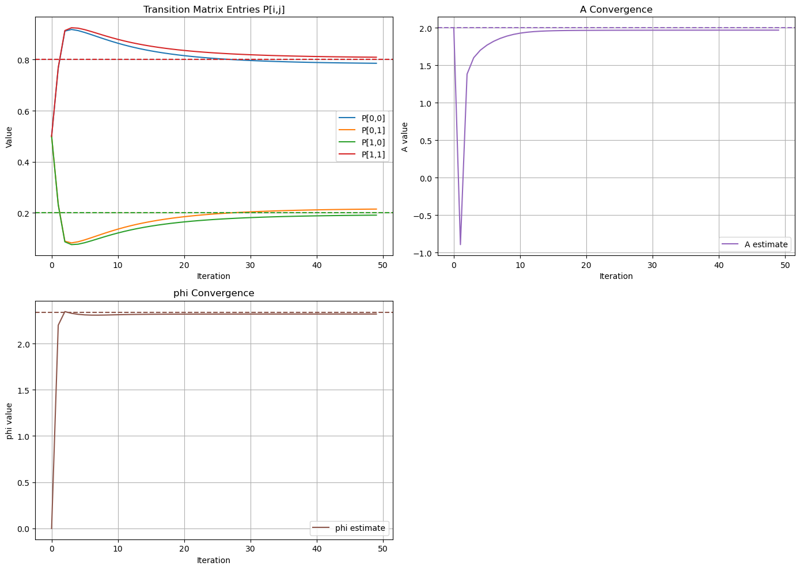
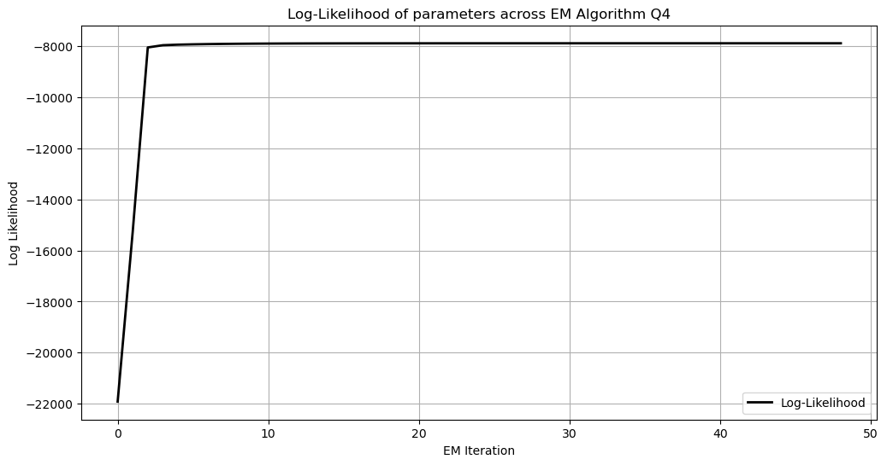